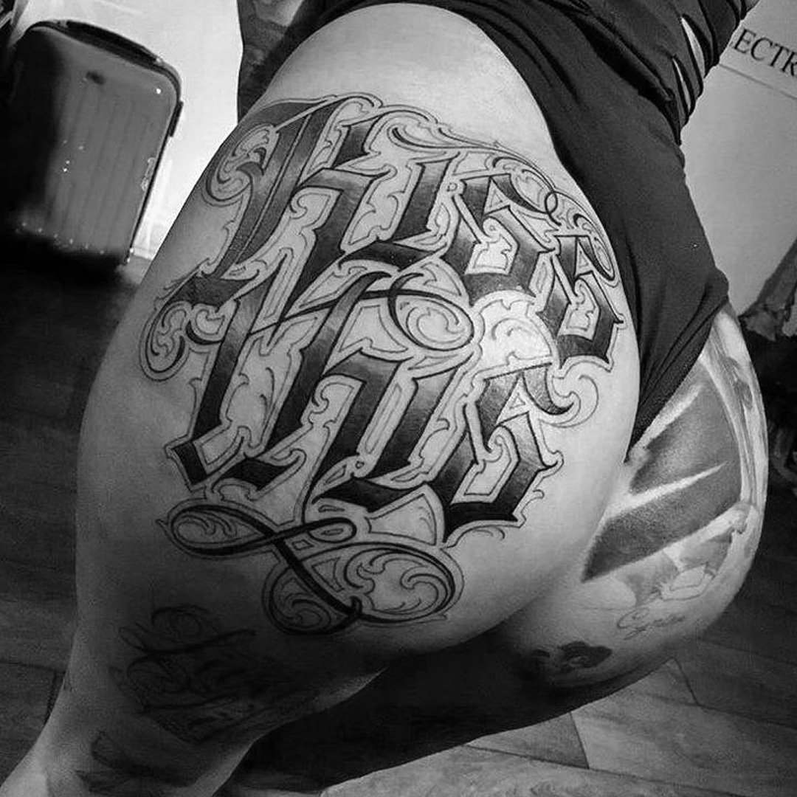

Один из самых популярных сегодня стилей тату. Тату в стиле леттеринг — это уникальное сочетание текста и формы. Каллиграфия, анатомия и персональное видение тату мастера собираются вместе, чтобы стать сложными узорами, в которых линии меняют свое направление и становятся интересным художественным приемом. В леттеринге большое значение имеет подбор шрифта. Наиболее частые приемы — это blackletter или шрифты с засечками, они удачно вписываются в пространство тела и становятся не просто надписью, а полноценным рисунком. Леттеринг — идеальное дополнение к другим стилям татуировок, будь то реализм или блэкворк, но особое место и художественную огранку он приобретает в сочетании со стилем Чикано, что выглядит безумно стильно. Конечно, без символизма здесь тоже не обходится, и в леттеринг каждый закладывает свой смысл . Чаще всего тату мастера набивают цитаты из книг, фильмов, любимых треков клиентов, но границ в этом нет — леттеринг уже давно стал чем-то большим, чем просто крылатые фразы на латыни.
